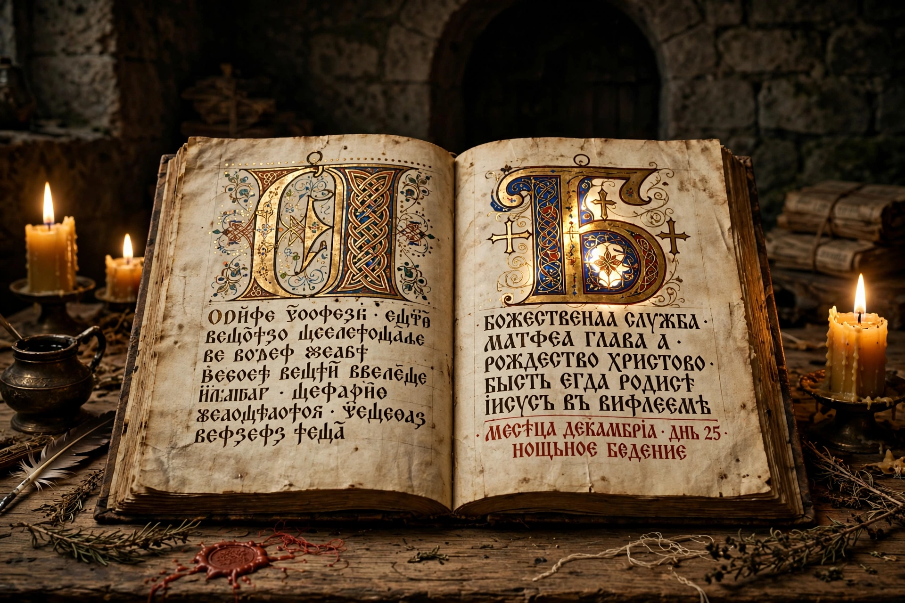

Old Church Slavonic, also known as Old Slavonic or Old Bulgarian, is the first Slavic literary language. It was codified in the 9th century by the Byzantine missionaries Saints Cyril and Methodius, who standardised the Slavic dialect spoken around Thessalonica in order to translate the Bible and liturgical texts for the Christianisation of the Slavs of Great Moravia.
| Old Church Slavonic | |
|---|---|
 The Codex Zographensis, a canonical manuscript | |
| Region | Eastern and Central Europe (liturgical) |
| Era | 9th–11th centuries; survives in recensions as Church Slavonic |
| Language family | Indo-European → Balto-Slavic → Slavic → South Slavic |
| Writing systems | Glagolitic, Early Cyrillic |
| ISO 639 | cu, chu |
In 862–863 Prince Rastislav of Moravia asked Constantinople for missionaries; the brothers Constantine (Cyril) and Methodius devised the Glagolitic alphabet and translated the Gospels, Psalter and liturgy. After Cyril's death in Rome (869) and Methodius's in Moravia (885), their disciples were expelled from Moravia and welcomed in the First Bulgarian Empire, where the Preslav and Ohrid literary schools flourished and the Cyrillic script was developed.
The small corpus of 10th–11th century manuscripts — including the Codex Zographensis, Codex Marianus, Codex Assemanius, Psalterium Sinaiticum and Kiev Missal — defines "canonical" Old Church Slavonic. Later regional recensions (Russian, Serbian, Bulgarian, Croatian) collectively form Church Slavonic, still used liturgically in many Orthodox and Eastern Catholic churches.
The language preserves archaic Indo-European features: seven noun cases, three numbers including the dual, a rich system of participles, and the nasal vowels ę and ǫ. Its phonology and grammar are reconstructed as close to late Common Slavic, making it foundational for Slavic historical linguistics.